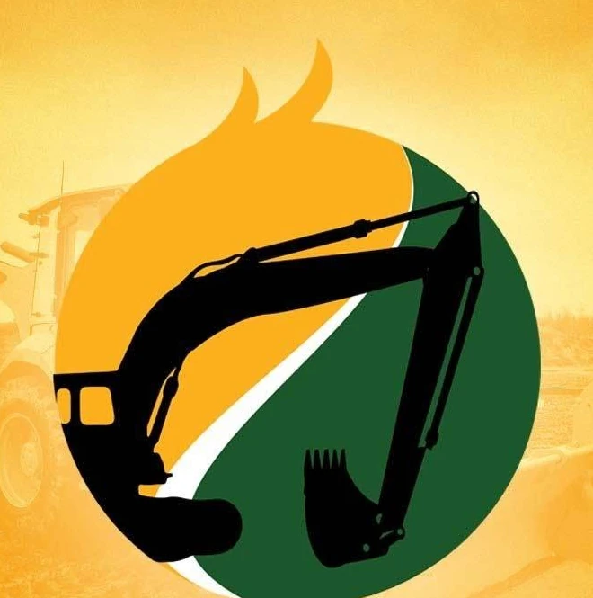
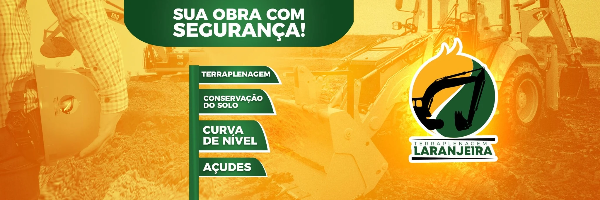

Financeiro
Receitas, despesas e documentos estão distribuídos entre planilhas, papéis e informações que ficam com as pessoas.

Material preparado pela Lean Company com base na conversa com Renan e Reverson.
O primeiro passo é organizar as informações da empresa. Depois, transformar essa base em números confiáveis para acompanhar o caixa, o resultado e cada máquina da operação.


Saber o que entrou. Saber o que saiu. Saber onde estão as máquinas e quanto cada uma deixou.
O desafio inicial não é criar análise sofisticada. É construir uma base simples, confiável e que funcione no dia a dia.
Receitas, despesas e documentos estão distribuídos entre planilhas, papéis e informações que ficam com as pessoas.
Hoje existem cinco CNPJs e movimentações pessoais e empresariais que precisam ser entendidas e organizadas.
A operação tem cerca de 15 máquinas em diferentes locais, ainda sem uma visão central de localização, receita, custos e resultado.
Para fechar uma obra ou entender o resultado de uma máquina, muitas informações precisam ser buscadas novamente.
Quatro frentes, em uma sequência simples: primeiro a base; depois a análise.
Organizar a movimentação financeira e deixar claro como a rotina deve funcionar.
Escolher uma ferramenta adequada e organizar quem faz cada parte do processo.
Com a base funcionando, construir uma leitura clara da empresa.
Depois da base financeira confiável, abrir o resultado por máquina e acompanhar melhor a operação.
Hoje, responder algumas perguntas exige procurar notas, planilhas e informações espalhadas. A estrutura proposta serve para mudar isso.
A consultoria estrutura e acompanha a gestão. O BPO pode assumir a execução diária da rotina financeira.
A Lean desenha a forma de trabalhar, implanta os controles e acompanha os números com os donos.
A Lean assume o operacional financeiro seguindo os processos definidos e mantendo a base atualizada.
Assim, a Laranjeira escolhe se quer apenas a consultoria, apenas o BPO ou os dois trabalhos juntos.
Atuação híbrida entre trabalho presencial na Laranjeira e dedicação da equipe Lean no escritório, de acordo com a necessidade de cada etapa.
A despesa presencial cobre combustível, pedágio e alimentação e só é cobrada quando houver deslocamento. A quantidade de visitas presenciais é ajustada conforme a necessidade do trabalho.
A Lean assume a rotina operacional do financeiro para manter as informações organizadas, atualizadas e prontas para análise.
Condição inicial para facilitar a transição e a organização da nova rotina.
Valor recorrente após a etapa inicial de transição.
Pagamento mensal via boleto. O BPO é independente da consultoria e pode ser contratado separadamente.
Os serviços não se misturam: a consultoria continua responsável por estruturar, analisar e melhorar; o BPO executa o operacional financeiro do dia a dia.
Contas, CNPJs, documentos, pessoas, planilhas e rotinas atuais.
Sistema, processo financeiro e responsabilidades de cada pessoa.
Garantir que receitas, despesas, saldos e registros estejam fechando.
DRE, fluxo de caixa, contas a pagar e receber e demais controles.
Localização, receita, custos e resultado de cada máquina.